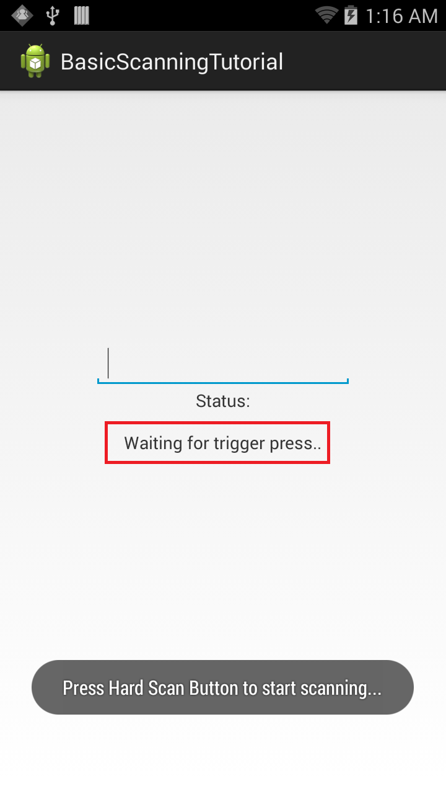

Overview
This guide will walk you through creating an EMDK For Android application that will use Barcode/Scanning APIs introduced in EMDK V 3.0, to perform Scanning operations on your Symbol Android devices without using Profile Wizard. The API uses Barcode Manager, which is the primary object to access barcode scanning feature.
In this tutorial, we will explore the Barcode/Scanning API by using it for developing a basic application that will scan barcodes.
Note: You don't need the Profile Wizard while using the Barcode/Scanning APIs as everything could be configured programmatically through code.
Creating The Project
Note: Provide "BasicScanningTutorial" as the project name for this tutorial.
Start by creating a new Android Studio project.
Enabling Android Permissions
Modify the Application's Manifest.xml to use the EMDK library and to set permission for the EMDK to scan the barcodes.
You must first enable permissions for 'com.symbol.emdk.permission.EMDK':
<uses-permission android:name="com.symbol.emdk.permission.EMDK" />Then you must enable the EMDK library in your application node:
<uses-library android:name="com.symbol.emdk" />
Adding Some Code
1. Now we will start to add some code.
First you must add references to the libraries:
import com.symbol.emdk.EMDKManager;
import com.symbol.emdk.EMDKManager.EMDKListener;
import com.symbol.emdk.barcode.ScanDataCollection;
import com.symbol.emdk.barcode.Scanner.DataListener;
import com.symbol.emdk.barcode.Scanner.StatusListener;
import com.symbol.emdk.barcode.StatusData;
Then you must extend the activity to implement EMDKListener.
After that you also need to implement StatusListener for notifying client applications to notify scan events. Override its `onStatus` function.
Finally implement DataListener for notifying client applications when the scan data is available. Override its `onData` function.
:::java
public class MainActivity extends Activity implements EMDKListener, StatusListener, DataListener{
//some lines of code omitted for clarity
@Override
public void onClosed() {
// TODO Auto-generated method stub
}
@Override
public void onOpened(EMDKManager emdkManager) {
// TODO Auto-generated method stub
}
@Override
public void onData(ScanDataCollection scanDataCollection) {
// TODO Auto-generated method stub
}
@Override
public void onStatus(StatusData statusData) {
// TODO Auto-generated method stub
}
}
We will now create some global variables to hold the instance objects of EMDKManager, BarcodeManager and Scanner. These variables would be used throughout the code.
We will then add some UI elements starting with a [TextView](http://developer.android.com/reference/android/widget/TextView.html) to display the status of scanning operation and then [EditText](http://developer.android.com/reference/android/widget/EditText.html) to populate scanned barcode data.
:::java
// Declare a variable to store EMDKManager object
private EMDKManager emdkManager = null;
// Declare a variable to store Barcode Manager object
private BarcodeManager barcodeManager = null;
// Declare a variable to hold scanner device to scan
private Scanner scanner = null;
// Text view to display status of EMDK and Barcode Scanning Operations
private TextView statusTextView = null;
// Edit Text that is used to display scanned barcode data
private EditText dataView = null;
//boolean flag to start scanning after scanner initialization, Used in OnStatus callback to insure scanner is idle before read() is called
private boolean startRead = false;
3. Now, let us design the simple UI that has a TextView to display the status of scanning operation and above that an EditText to populate scanned barcode data.
So, remove all the code, inside "res/layout/activity_main.xml" and add following XML layout code for UI.
<RelativeLayout xmlns:android="http://schemas.android.com/apk/res/android"
xmlns:tools="http://schemas.android.com/tools"
android:layout_width="match_parent"
android:layout_height="match_parent"
android:padding="16dip"
tools:context=".MainActivity" >
<EditText
android:id="@+id/editText1"
android:layout_width="wrap_content"
android:layout_height="wrap_content"
android:layout_above="@+id/textViewStatusTitle"
android:layout_centerHorizontal="true"
android:ems="10"
android:fadeScrollbars="true"
android:inputType="none|textMultiLine" />
<TextView
android:id="@+id/textViewStatus"
android:layout_width="wrap_content"
android:layout_height="wrap_content"
android:layout_centerInParent="true"
android:text="" />
<TextView
android:id="@+id/textViewStatusTitle"
android:layout_width="wrap_content"
android:layout_height="wrap_content"
android:layout_above="@+id/textViewStatus"
android:layout_centerHorizontal="true"
android:layout_marginBottom="15dp"
android:text="Status:" />
</RelativeLayout>
3. In the onCreate method, we take reference of UI elements that are declared in "res/layout/activity_main.xml" in order to use them in our Activity. We then call getEMDKManager so that the EMDK can be initialized and checked to see if it is ready.
// Reference to UI elements
statusTextView = (TextView) findViewById(R.id.textViewStatus);
dataView = (EditText) findViewById(R.id.editText1);
// The EMDKManager object will be created and returned in the callback.
EMDKResults results = EMDKManager.getEMDKManager(
getApplicationContext(), this);
// Check the return status of getEMDKManager and update the status Text
// View accordingly
if (results.statusCode != EMDKResults.STATUS_CODE.SUCCESS) {
statusTextView.setText("EMDKManager Request Failed");
}
4. We will write a method initializeScanner to initialize and enable the scanner and its listeners by using Barcode Manager object. The enable method enables the scanner hardware. This method does not turn on the laser start scanning, it will make the scanner device available to your application. If the same of scanner is enabled by other applications, calling enable() will throw a ScannerException. You must call disable() when you are done the scanning, otherwise it will remain locked and be unavailable to other applications.
// Method to initialize and enable Scanner and its listeners
private void initializeScanner() throws ScannerException {
if (scanner == null) {
// Get the Barcode Manager object
barcodeManager = (BarcodeManager) this.emdkManager
.getInstance(FEATURE_TYPE.BARCODE);
// Get default scanner defined on the device
scanner = barcodeManager.getDevice(DeviceIdentifier.DEFAULT);
// Add data and status listeners
scanner.addDataListener(this);
scanner.addStatusListener(this);
// Hard trigger. When this mode is set, the user has to manually
// press the trigger on the device after issuing the read call.
scanner.triggerType = TriggerType.HARD;
// Enable the scanner
scanner.enable();
//set startRead flag to true. this flag will be used in the OnStatus callback to insure
//the scanner is at an IDLE state and a read is not pending before calling scanner.read()
startRead = true;
}
}
5. We will also need a method to release scanner resources when we are no longer using them. We will name this method deInitilazeScanner.
private void deInitializeScanner() throws ScannerException {
if (scanner != null) {
try {
if(scanner.isReadPending()){
scanner.cancelRead();
}
scanner.disable();
} catch (Exception e) {
e.printStackTrace();
}
try {
scanner.removeDataListener(this);
scanner.removeStatusListener(this);
} catch (Exception e) {
e.printStackTrace();
}
try {
scanner.release();
} catch (Exception e) {
e.printStackTrace();
}
scanner = null;
}
}
6. Now we need to use the onOpened method to get a reference to the EMDKManager. The EMDKListener interface will trigger this event when the EMDK is ready to be used. The EMDKListener interface must be implemented in order to get a reference to the EMDKManager APIs. This event will pass the EMDKManager instance and we assign it to the global variable emdkManager that we created in the earlier steps. We have used that instance to get an instance Barcode Manager to enable scanning.
this.emdkManager = emdkManager;
try {
// Call this method to enable Scanner and its listeners
initializeScanner();
} catch (ScannerException e) {
e.printStackTrace();
}
As mentioned earlier that whenever a barcode is scanned, its data will be received in a callback
onDatamethod upon data availability. So we need to get that data, process it in the format we want and populate in the EditText of UI.The received data should be processed on a background thread not to block the UI thread. Hence we will use Android's own AsyncTask to process the scanned data on background thread. So we create AsyncTask
AsyncDataUpdatethat takes ScanDataCollection, which has the scanned data. It then processes this object indoInBackgroundmethod to filter the barcode data and label type in strings, which is then passed to the UI thread inonPostExecutemethod of AsyncTask to Populate.As mentioned earlier we would call
readmethod here in this callback so that the user can scan multiple barcodes.// Update the scan data on UI int dataLength = 0; // AsyncTask that configures the scanned data on background // thread and updated the result on UI thread with scanned data and type of // label private class AsyncDataUpdate extends AsyncTask<ScanDataCollection, Void, String> {
}@Override protected String doInBackground(ScanDataCollection... params) { // Status string that contains both barcode data and type of barcode // that is being scanned String statusStr = ""; try { // Starts an asynchronous Scan. The method will not turn ON the // scanner. It will, however, put the scanner in a state in // which // the scanner can be turned ON either by pressing a hardware // trigger or can be turned ON automatically. scanner.read(); ScanDataCollection scanDataCollection = params[0]; // The ScanDataCollection object gives scanning result and the // collection of ScanData. So check the data and its status if (scanDataCollection != null && scanDataCollection.getResult() == ScannerResults.SUCCESS) { ArrayList<ScanData> scanData = scanDataCollection .getScanData(); // Iterate through scanned data and prepare the statusStr for (ScanData data : scanData) { // Get the scanned data String a = data.getData(); // Get the type of label being scanned LabelType labelType = data.getLabelType(); // Concatenate barcode data and label type statusStr = barcodeData + " " + labelType; } } } catch (ScannerException e) { // TODO Auto-generated catch block e.printStackTrace(); } // Return result to populate on UI thread return statusStr; } @Override protected void onPostExecute(String result) { // Update the dataView EditText on UI thread with barcode data and // its label type if (dataLength++ > 50) { // Clear the cache after 50 scans dataView.getText().clear(); dataLength = 0; } dataView.append(result + "\n"); } @Override protected void onPreExecute() { } @Override protected void onProgressUpdate(Void... values) { }We call this AsyncTask in overridden
onDatamethod, by creating an instance ofAsyncDataUpdateand passing thescanDataCollectionfor further processing.// Use the scanned data, process it on background thread using AsyncTask // and update the UI thread with the scanned results new AsyncDataUpdate().execute(scanDataCollection);Whether we scan the barcode by pressing the hard scan key or keep it idle, it returns the status of the scanner at specific point of time in the overridden
onStatusmethod of implementedStatusListenerinterface. Since we are also displaying the status along with barcode data, we will make use of this method and populate the status.Just like scanned data, we are also processing the scanner status on a background thread. Hence we will create another AsyncTask named
AsyncStatusUpdatethat takes StatusData and processes it indoInBackgroundmethod to retrieve state in string format which is populated in status Text View on UI thread inonPostExecutemethod of the AsyncTask.// AsyncTask that configures the current state of scanner on background // thread and updates the result on UI thread private class AsyncStatusUpdate extends AsyncTask<StatusData, Void, String> {
}@Override protected String doInBackground(StatusData... params) { String statusStr = ""; // Get the current state of scanner in background StatusData statusData = params[0]; ScannerStates state = statusData.getState(); // Different states of Scanner switch (state) { // Scanner is IDLE case IDLE: statusStr = "The scanner enabled and its idle"; break; // Scanner is SCANNING case SCANNING: statusStr = "Scanning.."; break; // Scanner is waiting for trigger press case WAITING: statusStr = "Waiting for trigger press.."; break; // Scanner is not enabled case DISABLED: statusStr = "Scanner is not enabled"; break; default: break; } // Return result to populate on UI thread return statusStr; } @Override protected void onPostExecute(String result) { // Update the status text view on UI thread with current scanner // state statusTextView.setText(result); } @Override protected void onPreExecute() { } @Override protected void onProgressUpdate(Void... values) { }We call this AsyncTask in overridden
onStatusmethod, by creating an instance ofAsyncStatusUpdateand passing theStatusDatafor further processing.// process the scan status event on the background thread using // AsyncTask and update the UI thread with current scanner state new AsyncStatusUpdate().execute(statusData);Now let's override the
onDestroymethod so we can release the EMDKManager resources:@Override protected void onDestroy() { super.onDestroy(); if (emdkManager != null) {
} }// Clean up the objects created by EMDK manager emdkManager.release(); emdkManager = null;When we are done with scanning, we must release the scanner hardware resources for other applications to use. So override
onStopmethod and disable the scanner to release it.@Override protected void onStop() { // TODO Auto-generated method stub super.onStop(); try { if (scanner != null) { // releases the scanner hardware resources for other application // to use. You must call this as soon as you're done with the // scanning. scanner.removeDataListener(this); scanner.removeStatusListener(this); scanner.disable(); scanner = null; } } catch (ScannerException e) { e.printStackTrace(); } }Finally, Clean up the objects created by EMDK manager in
onClosedmethod, if EMDK closed abruptly.// The EMDK closed abruptly. // Clean up the objects created by EMDK // manager if (this.emdkManager != null) {
}this.emdkManager.release(); this.emdkManager = null;
That's it!!! We are done with all the coding part that will let us scan the barcodes of configured decoder params on Symbol Android device using Barcode/Scanning APIs introduced in EMDK V 3.0. Now let us run the application.
Running the Application
Connect the device (having latest EMDK runtime) to USB port.
Note:
Make sure the device is in USB debug.Run the application.

You can see a Toast, which indicates that the Scanner has been enabled and you can start scanning by pressing hard scan button of the device.
Now if you press the hard scan button, the status listener in the code starts working and current status of Scanner is displayed in Status TextView, which is
Scanning.
Once you are done with scanning and release the hard scan button, data gets populated on EditText and status is again updated in Status TextView, which is
Idle.
This is how Barcode/Scanning APIs introduced in EMDK V 3.0 can be used to perform Basic Scanning operations on your Symbol devices without using Profile Wizard. We will see the Barcode/Scanning APIs in depth to perform advanced scanning operations in the next tutorial.
Important Programming Tips
It is required to do the following changes in the application's AndroidManifest.xml:
Note:
- Include the permission for EMDK:
<uses-permission android:name="com.symbol.emdk.permission.EMDK"/>Note:
- Use the EMDK library:
<uses-library android:name="com.symbol.emdk"/>Installing the EMDK for Android application without deploying the EMDK runtime on the Symbol device will fail because of missing shared library on the device.
Use the DataWedge v1.7.12 or higher version to test the ProfileManager.processProfile() for DataWedge profiles.
What's Next
Now that you have learned how to perform Basic Scanning operations on your Symbol Android devices through applications without using Profile Wizard, let us try to understand the API in depth and perform some advanced scanning. So in the next tutorial, we will concentrate on Barcode/Scanning APIs in depth and use it to perform advanced scanning operations by creating a tutorial.
CONTENT BACKUP
Once the barcode is enabled, we will call read method on scanner. The scanning API provides read method that starts an asynchronous Scan. The method will not turn ON the scanner. It will, however, put the scanner in a state in which the scanner can be turned ON either by pressing a hardware trigger or can be turned ON automatically. This is determined by the Scanner.TriggerType. The data notification must registered in order to scan and get the Scan Data. The read request can be canceled by issuing a cancelRead. If a read() is submitted while another read is pending, the method call will fail. It is recommended to check whether a read is pending by calling isReadPending() before submitting a read(). A read() can also be submitted from within onData and onStatus events. If called within onStatus, it should be called only when IDLE status is received. If called within onData, then checking for isReadPending() is recommended.
> Note: The `read` method allows you to scan the barcode only once. If you want to scan the barcodes multiple times then call `read` multiple times. Hence later in this tutorial, we will also call `read` in the `onData` callback method, which is executed every time a barcode is scanned.